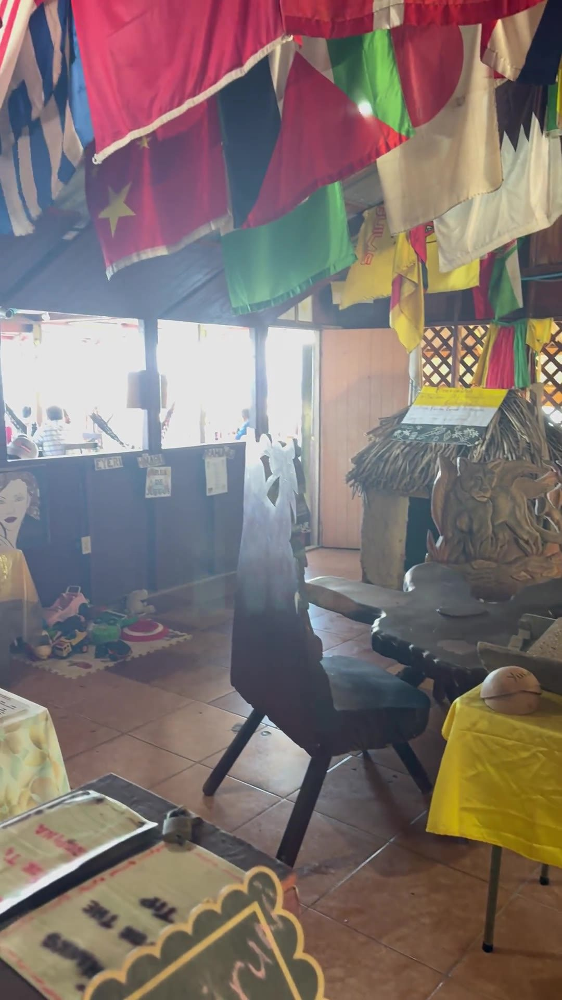

Visítanos
Punta Gorda, en el east end de Roatán.
Sobre la Calle Principal, en el Barrio La Cola, a una cuadra de la Iglesia Católica, mirando al pueblo de pescadores.
Horario
Cuándo está encendida la cocina
La vida del pueblo no siempre va con reloj — en día de fiesta o de mala pesca podemos abrir tarde o cerrar temprano. Si vas a manejar hasta acá, mandános un WhatsApp antes y te decimos exactamente cómo estamos.
Dónde estamos
La dirección
Cómo llegar
Cuánto se hace desde donde estás
Pasajeros de crucero
Sí, te da tiempo.
Desde Mahogany Bay o el Puerto de Roatán son unos 45 a 50 minutos de ida y otros tantos de vuelta. Sal por la mañana, come al mediodía, y regresas al barco con horas de sobra.
Dos cosas que hay que prever: la machuca tarda de 30 a 45 minutos, y los taxis del east end no siempre están esperando donde los dejaste. Si quieres todo resuelto, la empresa de tours de la familia te lleva, te espera y te trae de vuelta.

Antes de venir